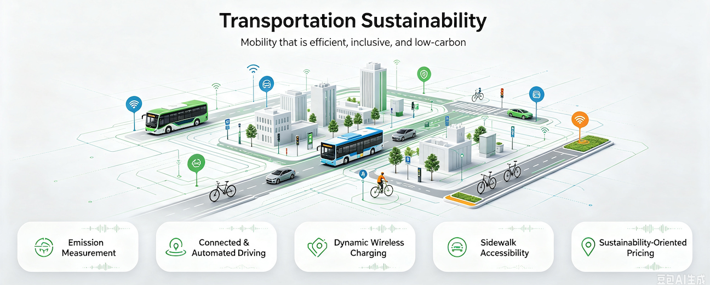
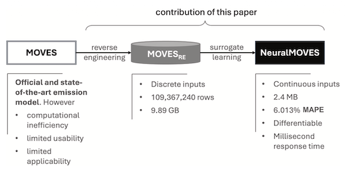
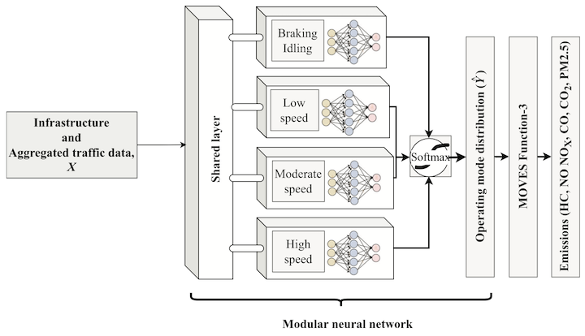
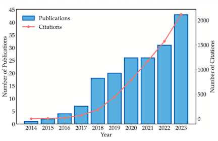
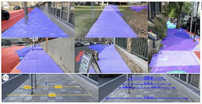
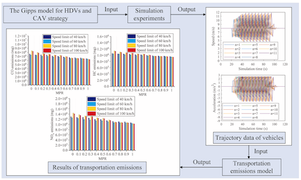
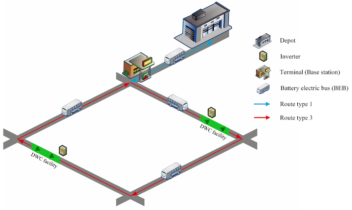
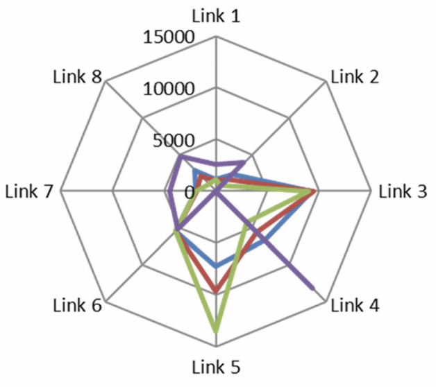
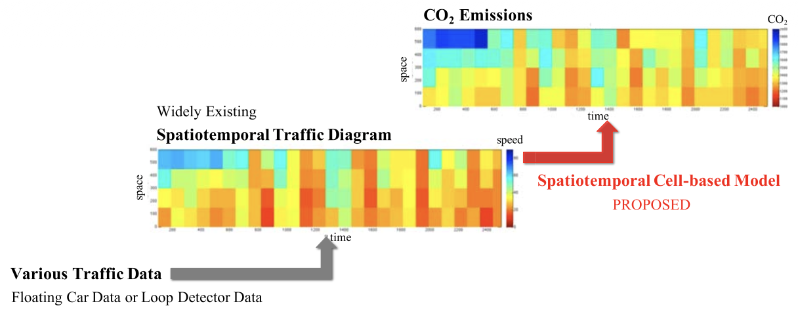
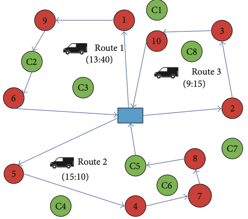

Sustainability: Emissions, Pricing, and Wireless Charging
Overview
Transportation sustainability seeks to reduce environmental impacts while maintaining efficient, affordable, and inclusive mobility. Achieving it requires reliable emission measurement, cleaner vehicles and energy systems, environmentally informed pricing and operations, and accessible infrastructure for all travelers.

Our studies advance sustainable mobility through emission modeling, vehicle and traffic control, electric infrastructure, road pricing, and accessible street mapping:
- Accurate emission assessment is constrained by trade-offs among scale, resolution, data requirements, and computational cost. We developed complementary models spanning NeuralMOVES for lightweight microscopic estimation, a modular neural network for city-wide operating-mode distributions, and a spatiotemporal cell-based model for freeway CO₂ emissions[1,2,9].
- Driving automation can either improve or worsen environmental performance depending on connectivity, penetration, traffic demand, and control design. We synthesized these operational impacts and emission-reduction methods, then demonstrated an emission-oriented CAV car-following strategy that smooths mixed traffic and reduces multiple pollutants under fog[3,5].
- Sidewalk accessibility assessment is traditionally manual, expensive, and constrained by limited city-scale data. We designed and validated Sidewalk AI Scanner, combining participatory smartphone imagery with Visual AI to identify sidewalk width, obstacles, and pavement conditions at scale[4].
- Dynamic wireless charging can reduce electric-bus battery requirements, but infrastructure deployment and charging schedules are tightly coupled. We developed an integrated strategic and tactical optimization model that jointly determines charging locations, battery capacity, and time-of-use charging schedules[6].
- Electric-vehicle operations must also jointly respect range limits, charging time, and time-varying congestion. We formulated a dynamic electric-vehicle routing problem that coordinates routes, departure times, and repeated charging decisions using a genetic algorithm and dynamic shortest paths[10].
- Road pricing can mitigate congestion and emissions, but uncertain travel demand and environmental conditions make conventional toll plans unreliable. We developed complementary distributionally robust simulation-based and bilevel stochastic-fuzzy optimization methods for time-of-day and sustainability-oriented pricing under uncertainty[7,8].
Publications

[1]NeuralMOVES: A Lightweight and Microscopic Vehicle Emission Estimation Model Based on Reverse Engineering and Surrogate Learning

[2]Estimating City-Wide Operating Mode Distribution of Light-Duty Vehicles: A Neural Network-Based Approach

[3]Environmental Impacts and Emission Reduction Methods of Vehicles Equipped With Driving Automation Systems: An Operational-Level Review

[4]Mapping Sidewalk Accessibility With Smartphone Imagery and Visual AI: A Participatory Approach

[5]Emissions-Reduction Strategy for Connected Autonomous Vehicles on Mixed Traffic Freeways

[6]Planning Dynamic Wireless Charging Infrastructure for Battery Electric Bus Systems With the Joint Optimization of Charging Scheduling
[7]Time-of-Day Pricing for Toll Roads Under Traffic Demand Uncertainties: A Distributionally Robust Simulation-Based Optimization Method

[8]A Sustainable Road Pricing Oriented Bilevel Optimization Approach Under Multiple Environmental Uncertainties

[9]Estimating Carbon Dioxide Emissions of Freeway Traffic: A Spatiotemporal Cell-Based Model

[10]Electric Vehicle Routing Problem with Charging Time and Variable Travel Time